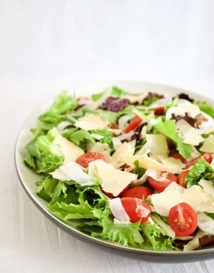

House Salad

Ingredients for the Salad:
- 2 cups spring mix (*make sure it includes Argula and Radicchio)
- 2 cups romaine lettuce, chopped
- 3/4 cup cherry tomatoes, halved
- 1/3 cup fresh fennel, thinly sliced
- 1 oz asiago, romano, and parmesan cheese, shaved
Ingredients for the Lemon Garlic Vinaigrette:
- 6 tbsp extra virgin olive oil
- 1/4 cup fresh squeezed lemon juice
- 4 cloves garlic, mined finely
- 1 tsp parmesan cheese, grated
- 1/4 tsp dried oregano
- 1/4 tsp crushed red pepper flakes
- 1/2 tsp salt
- 1/4 tsp black pepper
Instructions:
- Combine all salad ingredients in a large mixing bowl.
- Combine all vinaigrette ingredients in a small jar with a tight lid. Shake vigorously to combine or whisk until combined well
- Drizzle dressing over the salad, toss to coat and serve immediately.
- Enjoy!
Shirazi Salad
Ingredients:
- 4 cucumbers, chopped
- 4 roma tomatoes, chopped
- 1/4 red onion, finely chopped
- zest and juice of a lemon
- 1/4 cup mint leaves, chopped
- 2 tbsp fresh parsley, chopped
- 2 tbsp extra virgin olive oil
- salt and pepper to taste
Instructions:
- Combine all salad ingredients in a large mixing bowl.
- Mix well and let it sit for 10-15 minutes to combine all the flavors.
- Enjoy!
Garden Salad with Italian Dressing
Ingredients for the Salad:
- 6 cups romaine lettuce
- 2 roma tomatoes
- 1/2 red onion, thinly sliced into rounds
- 1/4 cup shredded carrots
- 1/2 cup whole black olives
- 1/3 cup freshly grated parmesan
- 1 cup garlic croutons
- pepperocinis
Ingredients for the Italian Dressing:
- 1.7 oz Zesty Italian Dressing Mix
- 3/4 cup extra virgin olive oil
- 1/3 cup white vinegar
- 1/4 cup water
- 1 tsp dijon mustard
- 1 tbsp mayo
- 1/2 tsp granulated sugar
- 1/2 tsp garlic powder
- 1/2 tsp herbs de provence (optional)
- salt and pepper to taste
Instructions:
- Combine all salad ingredients, lettuce, tomatoes, onion, carrots, and olives in a large mixing bowl.
- Top with parmesan, croutons, and pepperocinis.
- Combine all dressing ingredients in a jar, shake vigorously.
- Toss with dressing just before serving.
- Enjoy!